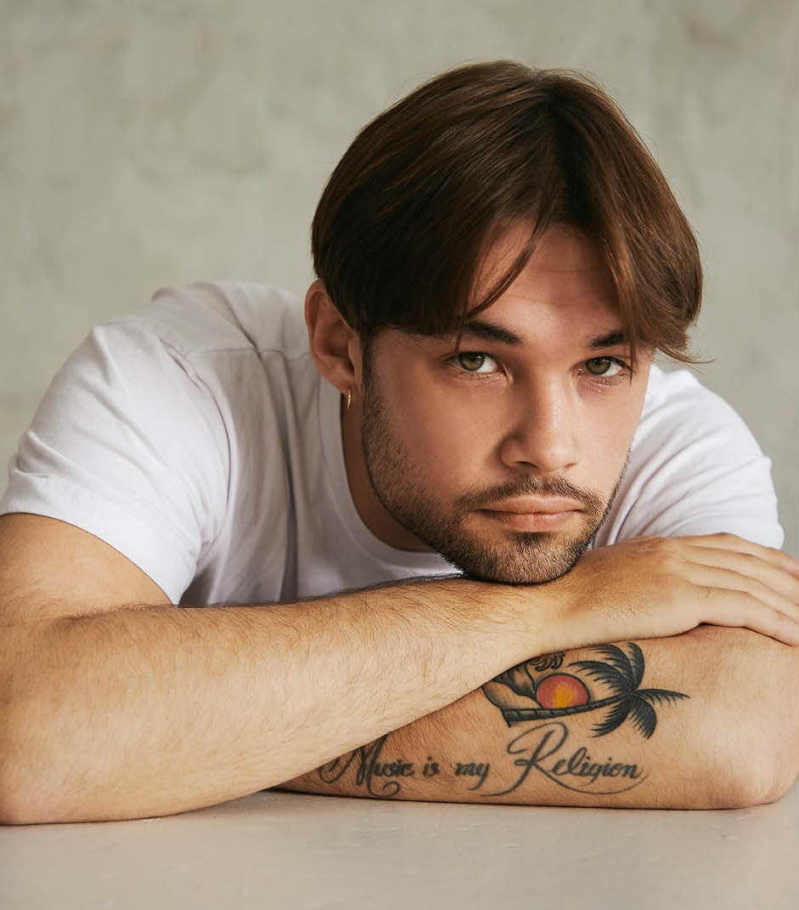

Why Fiji Blue? It's the color of the emotions we try to convery through our music -- light blue can bring serenity while dark blue brings a sense of melancholy.
Trevor DeringSinger-SongwriterAs a songwriter, Trevor hopes to create something from nothing. What sets him apart from other artists is his ability to contribute towards many aspects in the creation process of a song. |
|
|  |
Valentin FritzProducerValentin is a freelance producer, DJ, and songwriter. Music has been a part of his life for as long as he could remember. From Big Bands to Orchestras, he's been involved in arranging and writing for different ensembles. |